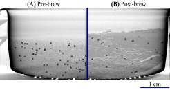
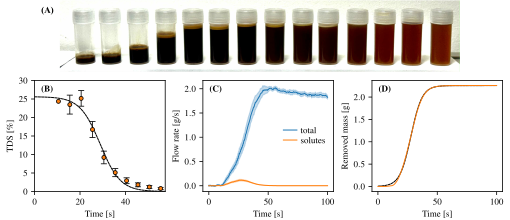
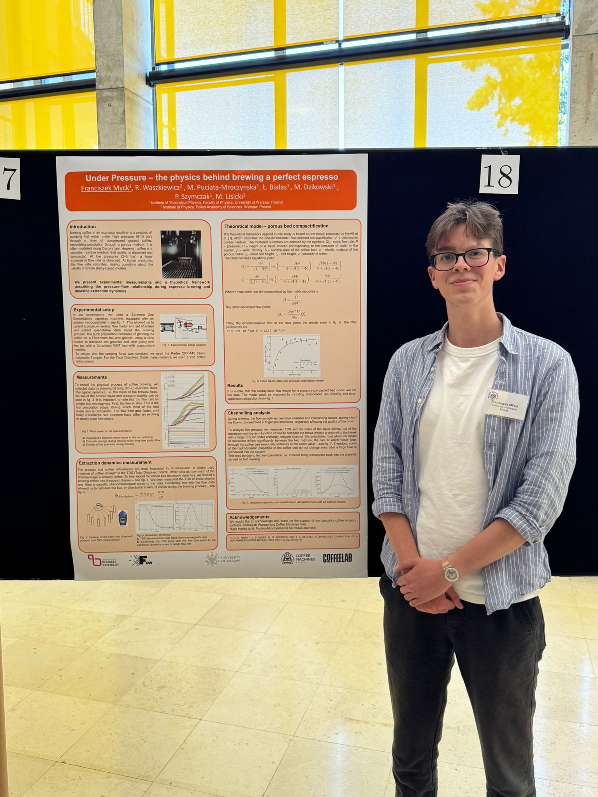
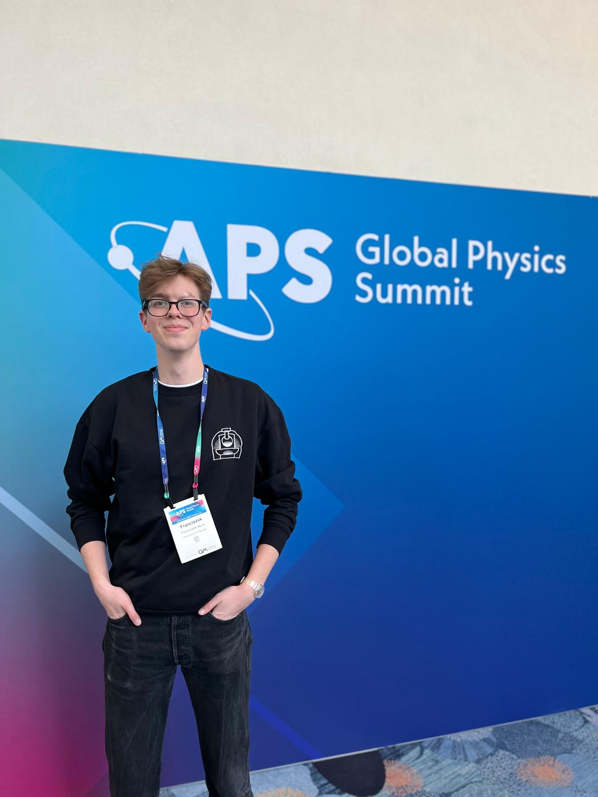

Science
I work at the interface of soft matter physics, hydrodynamics, statistical physics, and biological systems. I am especially interested in active matter, biophysics, and gastro-/coffee physics.
Publications
Talks
Google Scholar
Press releases
- Physics world article on espresso brewing (EN)
- University of Warsaw press release on the physics of espresso (PL)
- Gazeta Wyborcza article on the physics of espresso (PL)
- Ars Technica article on the physics of espresso (EN)
Pics & figs



